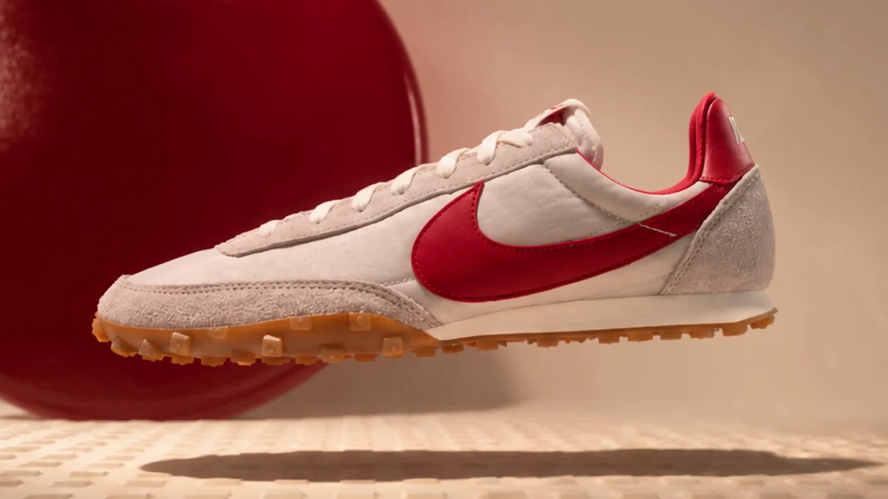
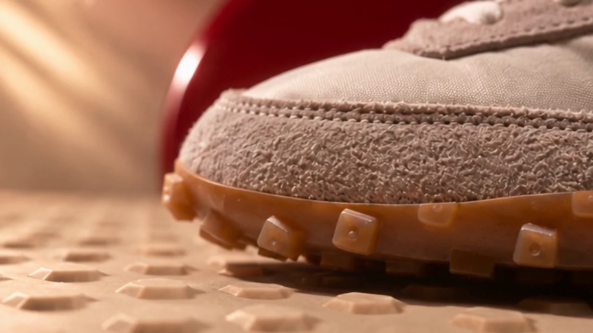
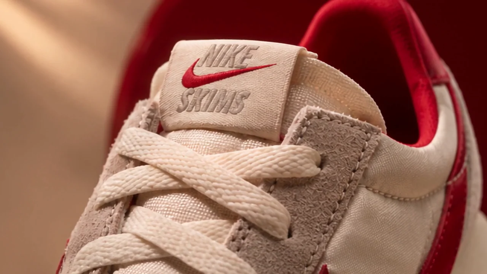
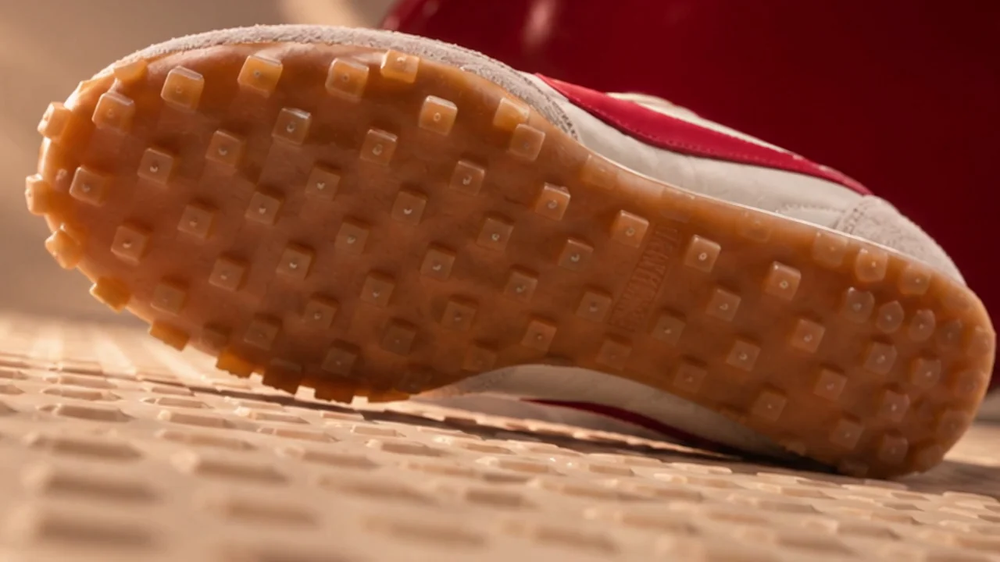
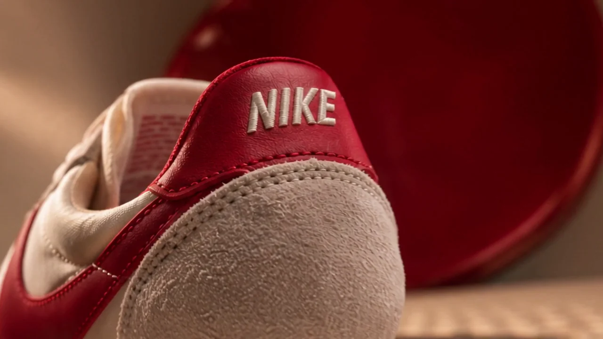
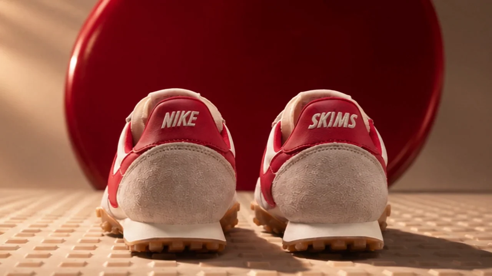

NikeSKIMS / Independent product film
Rhythm in Bone
Warm light, a deep-red disc and a suspended silhouette. A tactile product study cut to an original rhythm.
- Role
- Creative direction + design
- Year
- 2026
- Studio
- Dream City Studio
Soft material. A sharper pulse.
Bone-colored nylon and suede meet gum texture and a deep-red backdrop. The shoe moves from a floating silhouette into close detail, then reveals the paired heels before the final hero arc.
Independent AI-assisted concept. Not commissioned by or affiliated with Nike or SKIMS.
Seven beats. One continuous world.
Warm directional light and the red disc carry through every shot. Short material inserts interrupt the longer floating movement, then the camera pulls back from the heel to reveal the pair.
- Float / detail
A lateral reveal gives way to toe, tongue and lace, then outsole close-ups.
- Pair / hero
A heel view opens to the pair before a final camera arc around the single shoe.







Build the rhythm in the edit.
Selected generated footage is arranged into seven editorial beats. Moving macros lead directly into the heel-to-pair reveal and camera-led hero. A rolling passage was removed after review found that its generated heel omitted the product mark.
An original synthesized 96 BPM instrumental sets the pace. The score is recut to the ten-second film, retaining the existing closing lockup with no added portfolio text.
Generated geometry, materials, stitching and embroidery are approximate, not a pixel-exact product reproduction. The images above are extracted from the final film.
Dream City Studio / AI-assisted visualization + edit / 1280 × 720 / H.264 + AAC